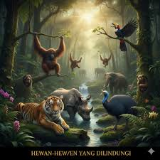

An atom is the smallest unit of ordinary matter that forms a chemical element. Every solid, liquid, gas, and plasma is composed of neutral or ionized atoms.
View9 mins
- Dalai Lama -
An atom is the smallest unit of ordinary matter that forms a chemical element. Every solid, liquid, gas, and plasma is composed of neutral or ionized atoms.
View9 mins

World Wildlife Fund is committed to endangered species protection. See how we are ensuring that the world our children inherit will be home to the same.
View9 mins